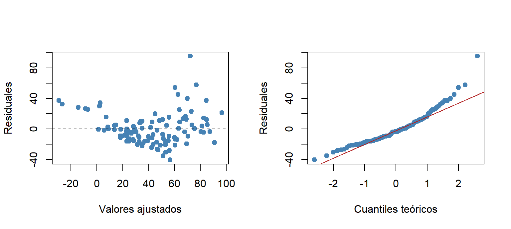
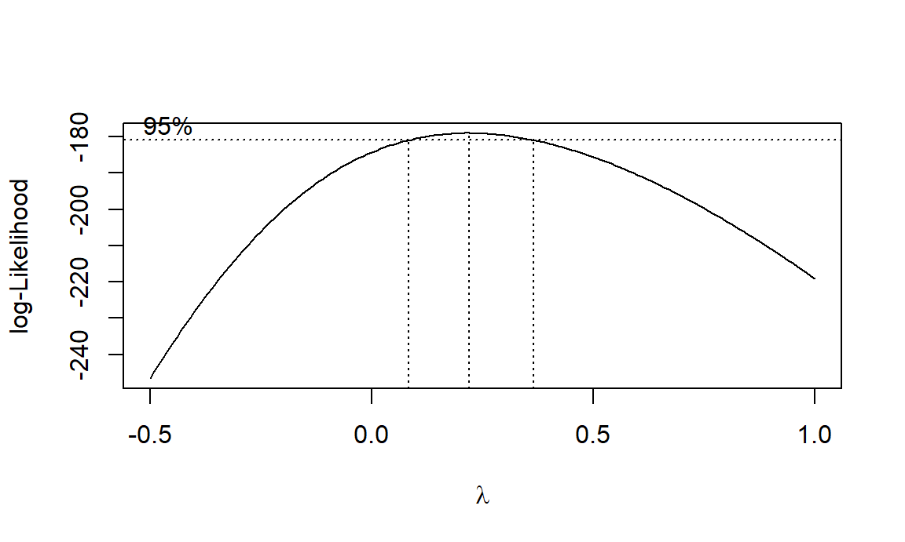

Al terminar este capítulo, usted estará en capacidad de:
plantear un modelo de regresión lineal múltiple e interpretar sus coeficientes;
expresar el modelo en forma matricial y obtener los estimadores de mínimos cuadrados;
evaluar la bondad del ajuste con el coeficiente de determinación y el coeficiente de determinación ajustado;
realizar la prueba F global, las pruebas t individuales y los intervalos de confianza para los coeficientes, y hacer predicciones;
incluir variables cualitativas mediante variables indicadoras;
reconocer y medir la multicolinealidad;
seleccionar las variables de un modelo y validar sus supuestos;
ajustar e interpretar un modelo de regresión múltiple con R.
1 Del modelo simple al múltiple
En el capítulo 3 explicamos una variable \(Y\) con una sola variable \(X\). Pero en la realidad casi todas las variables dependen de varios factores a la vez: las ventas de un producto dependen de la publicidad, pero también del precio, de la temporada y de la competencia; el salario de una persona depende de su educación, de su experiencia y del sector en que trabaja; la temperatura con que llega una pizza depende del tiempo de entrega, pero también del número de pizzas del pedido y de la sucursal. La regresión lineal múltiple extiende el modelo del capítulo 3 para incluir varias variables independientes al mismo tiempo (Montgomery et al., 2012, p. 4; Walpole et al., 2012, p. 443).
Incluir varias variables tiene dos ventajas. La primera es que, en general, se explica y se predice mejor la variable dependiente. La segunda, y más importante, es que permite estudiar el efecto de cada variable manteniendo constantes las demás. Si solo se analiza la relación entre las ventas y la publicidad, el efecto que se atribuye a la publicidad puede estar mezclado con el de otras variables relacionadas con ella, como el precio. La regresión múltiple permite separar esos efectos.
2 Modelo de regresión lineal múltiple
Definición 1 (Modelo de regresión lineal múltiple) El modelo de regresión lineal múltiple con \(k\) variables independientes es \[
Y = \beta_0 + \beta_1 X_1 + \beta_2 X_2 + \cdots + \beta_k X_k + \varepsilon ,
\] donde \(Y\) es la variable dependiente, \(X_1, \ldots, X_k\) son las variables independientes, \(\beta_0, \beta_1, \ldots, \beta_k\) son los coeficientes de regresión, parámetros desconocidos, y \(\varepsilon\) es el error aleatorio.
Para cada observación \(i = 1, \ldots, n\), el modelo se escribe \[
Y_i = \beta_0 + \beta_1 x_{i1} + \beta_2 x_{i2} + \cdots + \beta_k x_{ik} + \varepsilon_i ,
\] donde \(x_{ij}\) es el valor de la variable \(X_j\) en la observación \(i\). Los supuestos sobre los errores son los mismos del capítulo 3: los \(\varepsilon_i\) son independientes, con distribución normal, media cero y varianza constante\(\sigma^2\). En total, el modelo tiene \(p = k + 1\) coeficientes por estimar.
2.1 Interpretación de los coeficientes
El coeficiente \(\beta_j\) es el cambio promedio en \(Y\) por cada aumento de una unidad en \(X_j\), manteniendo constantes todas las demás variables independientes del modelo. Esta condición, que en economía se expresa con la frase latina ceteris paribus (“lo demás constante”), es la clave para interpretar correctamente un modelo de regresión múltiple: el valor de \(\beta_j\) depende de qué otras variables estén en el modelo, y puede cambiar, incluso de signo, si se agregan o se quitan variables (Montgomery et al., 2012, pp. 119-120).
El intercepto \(\beta_0\) es el valor promedio de \(Y\) cuando todas las variables independientes valen cero, y, como en la regresión simple, a menudo no tiene interpretación práctica.
2.2 El modelo en forma matricial
Con varias variables, la notación se simplifica mucho usando matrices. Las \(n\) ecuaciones del modelo se escriben como \[
\mathbf{y} = \mathbf{X}\boldsymbol{\beta} + \boldsymbol{\varepsilon},
\] donde \[
\mathbf{y} = \begin{pmatrix} y_1 \\ y_2 \\ \vdots \\ y_n \end{pmatrix},
\qquad
\mathbf{X} = \begin{pmatrix}
1 & x_{11} & x_{12} & \cdots & x_{1k} \\
1 & x_{21} & x_{22} & \cdots & x_{2k} \\
\vdots & \vdots & \vdots & & \vdots \\
1 & x_{n1} & x_{n2} & \cdots & x_{nk}
\end{pmatrix},
\qquad
\boldsymbol{\beta} = \begin{pmatrix} \beta_0 \\ \beta_1 \\ \vdots \\ \beta_k \end{pmatrix},
\qquad
\boldsymbol{\varepsilon} = \begin{pmatrix} \varepsilon_1 \\ \varepsilon_2 \\ \vdots \\ \varepsilon_n \end{pmatrix}.
\] La matriz \(\mathbf{X}\), de tamaño \(n \times p\), se llama matriz de diseño: cada fila corresponde a una observación y cada columna a una variable. La primera columna, de unos, corresponde al intercepto. Esta notación funciona igual para cualquier número de variables, y es la que usan internamente R y todos los programas estadísticos.
3 Estimación por mínimos cuadrados
Los coeficientes \(\beta_0, \beta_1, \ldots, \beta_k\) son desconocidos y se estiman con los datos de la muestra. Como en la regresión simple, se usa el método de mínimos cuadrados: los estimadores, que denotaremos \(\hat{\beta}_0, \hat{\beta}_1, \ldots, \hat{\beta}_k\), son los valores que minimizan la suma de los cuadrados de las diferencias entre los valores observados y los que da el modelo. Esta minimización puede hacerse de dos formas equivalentes: con sumatorias, como en el capítulo 3, o con matrices (Montgomery et al., 2012, pp. 71-74).
3.1 Forma escalar
La función de mínimos cuadrados es \[
S(\beta_0, \beta_1, \ldots, \beta_k) = \sum_{i=1}^{n}\Big(y_i - \beta_0 - \sum_{j=1}^{k}\beta_j x_{ij}\Big)^2 .
\] Los valores que la minimizan se encuentran derivando \(S\) con respecto a cada coeficiente e igualando a cero: \[
\frac{\partial S}{\partial \beta_0}\bigg|_{\hat{\beta}_0, \ldots, \hat{\beta}_k} = -2\sum_{i=1}^{n}\Big(y_i - \hat{\beta}_0 - \sum_{j=1}^{k}\hat{\beta}_j x_{ij}\Big) = 0
\] y, para \(j = 1, 2, \ldots, k\), \[
\frac{\partial S}{\partial \beta_j}\bigg|_{\hat{\beta}_0, \ldots, \hat{\beta}_k} = -2\sum_{i=1}^{n}\Big(y_i - \hat{\beta}_0 - \sum_{l=1}^{k}\hat{\beta}_l x_{il}\Big)x_{ij} = 0 .
\] Simplificando, se obtienen las ecuaciones normales de mínimos cuadrados: \[
\begin{aligned}
n\hat{\beta}_0 + \hat{\beta}_1\sum x_{i1} + \hat{\beta}_2\sum x_{i2} + \cdots + \hat{\beta}_k\sum x_{ik} &= \sum y_i \\
\hat{\beta}_0\sum x_{i1} + \hat{\beta}_1\sum x_{i1}^2 + \hat{\beta}_2\sum x_{i1}x_{i2} + \cdots + \hat{\beta}_k\sum x_{i1}x_{ik} &= \sum x_{i1}y_i \\
&\ \ \vdots \\
\hat{\beta}_0\sum x_{ik} + \hat{\beta}_1\sum x_{ik}x_{i1} + \hat{\beta}_2\sum x_{ik}x_{i2} + \cdots + \hat{\beta}_k\sum x_{ik}^2 &= \sum x_{ik}y_i
\end{aligned}
\] donde todas las sumas van de \(i = 1\) a \(n\). Hay \(p = k + 1\) ecuaciones con \(p\) incógnitas, y su solución son los estimadores \(\hat{\beta}_0, \hat{\beta}_1, \ldots, \hat{\beta}_k\). Con \(k = 1\) se obtienen las dos ecuaciones normales del capítulo 3.
3.2 Forma matricial
Con la notación matricial, el problema es encontrar el vector \(\hat{\boldsymbol{\beta}}\) que minimiza \[
S(\boldsymbol{\beta}) = \sum_{i=1}^{n}\varepsilon_i^2 = \boldsymbol{\varepsilon}^{\top}\boldsymbol{\varepsilon} = (\mathbf{y} - \mathbf{X}\boldsymbol{\beta})^{\top}(\mathbf{y} - \mathbf{X}\boldsymbol{\beta}) .
\] Desarrollando el producto, \[
S(\boldsymbol{\beta}) = \mathbf{y}^{\top}\mathbf{y} - \boldsymbol{\beta}^{\top}\mathbf{X}^{\top}\mathbf{y} - \mathbf{y}^{\top}\mathbf{X}\boldsymbol{\beta} + \boldsymbol{\beta}^{\top}\mathbf{X}^{\top}\mathbf{X}\boldsymbol{\beta}
= \mathbf{y}^{\top}\mathbf{y} - 2\boldsymbol{\beta}^{\top}\mathbf{X}^{\top}\mathbf{y} + \boldsymbol{\beta}^{\top}\mathbf{X}^{\top}\mathbf{X}\boldsymbol{\beta},
\] porque \(\boldsymbol{\beta}^{\top}\mathbf{X}^{\top}\mathbf{y}\) es una matriz de \(1 \times 1\), es decir, un número, que es igual a su transpuesta \(\mathbf{y}^{\top}\mathbf{X}\boldsymbol{\beta}\). Para derivar con respecto al vector \(\boldsymbol{\beta}\) se usan dos reglas del cálculo matricial: si \(\mathbf{a}\) es un vector y \(\mathbf{A}\) una matriz simétrica, \[
\frac{\partial\, \boldsymbol{\beta}^{\top}\mathbf{a}}{\partial \boldsymbol{\beta}} = \mathbf{a}
\qquad \text{y} \qquad
\frac{\partial\, \boldsymbol{\beta}^{\top}\mathbf{A}\boldsymbol{\beta}}{\partial \boldsymbol{\beta}} = 2\mathbf{A}\boldsymbol{\beta} .
\] Como \(\mathbf{X}^{\top}\mathbf{X}\) es simétrica, los estimadores de mínimos cuadrados deben satisfacer \[
\frac{\partial S}{\partial \boldsymbol{\beta}}\bigg|_{\hat{\boldsymbol{\beta}}} = -2\mathbf{X}^{\top}\mathbf{y} + 2\mathbf{X}^{\top}\mathbf{X}\hat{\boldsymbol{\beta}} = \mathbf{0},
\] que se simplifica a \[
\mathbf{X}^{\top}\mathbf{X}\,\hat{\boldsymbol{\beta}} = \mathbf{X}^{\top}\mathbf{y} .
\] Estas son las mismas ecuaciones normales de la forma escalar, escritas de manera compacta: el elemento de la fila \(j\) y la columna \(l\) de \(\mathbf{X}^{\top}\mathbf{X}\) es la suma \(\sum_i x_{ij}x_{il}\) (con \(x_{i0} = 1\) para la columna del intercepto), y el elemento \(j\) de \(\mathbf{X}^{\top}\mathbf{y}\) es \(\sum_i x_{ij}y_i\). Para resolverlas, se multiplican ambos lados por la inversa de \(\mathbf{X}^{\top}\mathbf{X}\).
Teorema 1 (Estimador de mínimos cuadrados) Si la matriz \(\mathbf{X}^{\top}\mathbf{X}\) es invertible, el estimador de mínimos cuadrados de \(\boldsymbol{\beta}\) es \[
\hat{\boldsymbol{\beta}} = (\mathbf{X}^{\top}\mathbf{X})^{-1}\mathbf{X}^{\top}\mathbf{y} .
\] Bajo los supuestos del modelo, \(\hat{\boldsymbol{\beta}}\) es un estimador insesgado de \(\boldsymbol{\beta}\), y la varianza de cada \(\hat{\beta}_j\) es \(\sigma^2 c_{jj}\), donde \(c_{jj}\) es el elemento \(j\)-ésimo de la diagonal de \((\mathbf{X}^{\top}\mathbf{X})^{-1}\)(Montgomery et al., 2012, p. 80).
La matriz \(\mathbf{X}^{\top}\mathbf{X}\) es invertible si ninguna variable independiente es una combinación lineal exacta de las demás. Si alguna casi lo es, aparece el problema de la multicolinealidad, que estudiaremos más adelante.
3.3 Valores ajustados, residuales y matriz sombrero
El vector de valores ajustados es \[
\hat{\mathbf{y}} = \mathbf{X}\hat{\boldsymbol{\beta}} = \mathbf{X}(\mathbf{X}^{\top}\mathbf{X})^{-1}\mathbf{X}^{\top}\mathbf{y} = \mathbf{H}\mathbf{y},
\qquad
\mathbf{H} = \mathbf{X}(\mathbf{X}^{\top}\mathbf{X})^{-1}\mathbf{X}^{\top} .
\] La matriz \(\mathbf{H}\), de tamaño \(n \times n\), se llama matriz sombrero (hat matrix), porque “le pone el gorro” a \(\mathbf{y}\). El vector de residuales es \[
\mathbf{e} = \mathbf{y} - \hat{\mathbf{y}} = (\mathbf{I} - \mathbf{H})\,\mathbf{y} .
\] Los elementos de la diagonal de \(\mathbf{H}\), que se denotan \(h_{ii}\), volverán a aparecer al estudiar las observaciones influyentes.
3.4 Propiedades de los estimadores de mínimos cuadrados
Es insesgado:\(E(\hat{\boldsymbol{\beta}}) = \boldsymbol{\beta}\). En efecto, como \(\mathbf{y} = \mathbf{X}\boldsymbol{\beta} + \boldsymbol{\varepsilon}\) y \(E(\boldsymbol{\varepsilon}) = \mathbf{0}\), \[
E(\hat{\boldsymbol{\beta}}) = (\mathbf{X}^{\top}\mathbf{X})^{-1}\mathbf{X}^{\top}E(\mathbf{y}) = (\mathbf{X}^{\top}\mathbf{X})^{-1}\mathbf{X}^{\top}\mathbf{X}\boldsymbol{\beta} = \boldsymbol{\beta} .
\]
Su matriz de varianzas y covarianzas es \(\operatorname{Cov}(\hat{\boldsymbol{\beta}}) = \sigma^2(\mathbf{X}^{\top}\mathbf{X})^{-1}\). En la diagonal están las varianzas \(V(\hat{\beta}_j) = \sigma^2 c_{jj}\), y fuera de ella, las covarianzas entre los estimadores.
Es el mejor estimador lineal insesgado. Según el teorema de Gauss-Markov, entre todos los estimadores insesgados que son combinaciones lineales de las \(y_i\), el de mínimos cuadrados es el de menor varianza: es el más eficiente, en el sentido del capítulo 1. Este resultado no requiere el supuesto de normalidad.
Ejemplo 1 Una cadena de tiendas quiere explicar las ventas mensuales de un producto (\(y\), en cientos de unidades) a partir de la inversión en publicidad (\(x_1\), en millones de pesos) y del precio de venta (\(x_2\), en miles de pesos). Se registraron los datos de 8 tiendas:
Tabla 1: Publicidad, precio y ventas de 8 tiendas.
Tienda
1
2
3
4
5
6
7
8
Publicidad (\(x_1\))
2
3
5
4
6
7
8
5
Precio (\(x_2\))
10
12
11
13
12
14
13
11
Ventas (\(y\))
31
29
40
32
39
38
43
42
El modelo es \(Y = \beta_0 + \beta_1 X_1 + \beta_2 X_2 + \varepsilon\), de modo que \(\mathbf{X}\) tiene una columna de unos y las columnas de publicidad y precio. Los productos matriciales son \[
\mathbf{X}^{\top}\mathbf{X} = \begin{pmatrix} 8 & 40 & 96 \\ 40 & 228 & 492 \\ 96 & 492 & 1164 \end{pmatrix},
\qquad
\mathbf{X}^{\top}\mathbf{y} = \begin{pmatrix} 294 \\ 1531 \\ 3535 \end{pmatrix},
\] donde, por ejemplo, \(8 = n\), \(40 = \sum x_{i1}\), \(228 = \sum x_{i1}^2\), \(492 = \sum x_{i1}x_{i2}\) y \(1531 = \sum x_{i1}y_i\). La inversa es \[
(\mathbf{X}^{\top}\mathbf{X})^{-1} = \begin{pmatrix} 15{,}1875 & 0{,}4375 & -1{,}4375 \\ 0{,}4375 & 0{,}0625 & -0{,}0625 \\ -1{,}4375 & -0{,}0625 & 0{,}1458 \end{pmatrix},
\] y entonces \[
\hat{\boldsymbol{\beta}} = (\mathbf{X}^{\top}\mathbf{X})^{-1}\mathbf{X}^{\top}\mathbf{y} = \begin{pmatrix} 53{,}375 \\ 3{,}375 \\ -2{,}792 \end{pmatrix} .
\] La ecuación de regresión estimada es \[
\hat{y} = 53{,}375 + 3{,}375\,x_1 - 2{,}792\,x_2 .
\]
Interpretación. Manteniendo constante el precio, por cada millón de pesos adicional invertido en publicidad, las ventas aumentan en promedio 3,375 cientos de unidades (337,5 unidades). Manteniendo constante la publicidad, por cada mil pesos de aumento en el precio, las ventas disminuyen en promedio 2,792 cientos de unidades. Los signos son los esperados: más publicidad, más ventas; mayor precio, menos ventas.
En R, las operaciones matriciales se hacen con t() (transpuesta), %*% (producto) y solve() (inversa), aunque en la práctica basta con lm(), agregando las variables con el signo +(R Core Team, 2024):
X <-cbind(1, tiendas$publicidad, tiendas$precio) # matriz de diseñoy <- tiendas$ventasXtX <-t(X) %*% Xsolve(XtX) %*%t(X) %*% y # estimador matricial
[,1]
[1,] 53.375000
[2,] 3.375000
[3,] -2.791667
modelo_tiendas <-lm(ventas ~ publicidad + precio, data = tiendas)coef(modelo_tiendas) # el mismo resultado
Si se ajusta una regresión simple de las ventas solo con la publicidad, la pendiente estimada es 2,18, bastante menor que el 3,375 del modelo múltiple. La razón es que en estas tiendas la publicidad y el precio están correlacionados (\(r = 0{,}65\)): las tiendas que invierten más en publicidad tienden a vender más caro, y el precio alto reduce las ventas. La regresión simple mezcla los dos efectos y subestima el de la publicidad. El modelo múltiple los separa. Este fenómeno, conocido como sesgo por variable omitida, muestra por qué es importante incluir en el modelo las variables relevantes (Montgomery et al., 2012, p. 120).
4 Bondad del ajuste
La descomposición de la variabilidad del capítulo 3 sigue siendo válida: \[
STC = SCR + SCE,
\] con \(STC = \sum(y_i - \bar{y})^2\), \(SCR = \sum(\hat{y}_i - \bar{y})^2\) y \(SCE = \sum(y_i - \hat{y}_i)^2\). Ahora la regresión tiene \(k\) grados de libertad y el error, \(n - k - 1\).
Definición 2 (Cuadrado medio del error en regresión múltiple) En un modelo con \(k\) variables independientes, el cuadrado medio del error, estimador insesgado de \(\sigma^2\), es \[
s^2 = CME = \frac{SCE}{n - k - 1} = \frac{SCE}{n - p} .
\]
Se divide entre \(n - p\) porque se estimaron \(p = k + 1\) coeficientes. Con \(k = 1\) se recupera el \(n - 2\) del capítulo 3.
4.1 Coeficiente de determinación y coeficiente ajustado
El coeficiente de determinación se define igual que antes, \(R^2 = SCR/STC = 1 - SCE/STC\), y mide la proporción de la variabilidad de \(Y\) que explica el conjunto de las variables independientes. En la regresión múltiple ya no es el cuadrado de un coeficiente de correlación simple.
El \(R^2\) tiene un inconveniente: nunca disminuye al agregar una variable al modelo, aunque esa variable no tenga ninguna relación con \(Y\), porque una variable más siempre permite ajustar los datos un poco mejor. Por eso no sirve para comparar modelos con distinto número de variables. Para eso se usa una versión que penaliza la complejidad del modelo.
Definición 3 (Coeficiente de determinación ajustado) El coeficiente de determinación ajustado es \[
R^2_{\text{aj}} = 1 - \frac{SCE/(n - k - 1)}{STC/(n - 1)} = 1 - (1 - R^2)\,\frac{n - 1}{n - k - 1} .
\]
El \(R^2_{\text{aj}}\) compara las varianzas, no las sumas de cuadrados: solo aumenta al agregar una variable si esa variable reduce el CME, es decir, si aporta más de lo que “cuesta” en grados de libertad. Siempre es menor que el \(R^2\), y puede incluso ser negativo (Montgomery et al., 2012, p. 333).
Ejemplo 2 Para las tiendas, \(SCE = 13{,}17\) y \(STC = 199{,}5\), de modo que \[
R^2 = 1 - \frac{13{,}17}{199{,}5} = 0{,}934,
\qquad
R^2_{\text{aj}} = 1 - (1 - 0{,}934)\,\frac{7}{5} = 0{,}908,
\qquad
s^2 = \frac{13{,}17}{5} = 2{,}633 .
\] La publicidad y el precio, en conjunto, explican el 93,4 % de la variabilidad de las ventas.
5 Inferencia en regresión múltiple
5.1 Prueba F global
La primera pregunta es si el modelo, en conjunto, sirve para algo: ¿hay al menos una variable independiente relacionada con \(Y\)? Se plantea \[
H_0: \beta_1 = \beta_2 = \cdots = \beta_k = 0
\qquad \text{contra} \qquad
H_1: \beta_j \neq 0 \text{ para al menos un } j .
\] Si \(H_0\) es verdadera, \[
F = \frac{SCR/k}{SCE/(n - k - 1)} = \frac{CMR}{CME} \sim F(k,\ n - k - 1),
\] y se rechaza \(H_0\) si \(f_{\text{obs}} > f_{1-\alpha;\,k,\,n-k-1}\). Los cálculos se organizan en la tabla ANOVA (Tabla 2).
Tabla 2: Tabla de análisis de varianza para la regresión lineal múltiple.
Fuente de variación
Suma de cuadrados
Grados de libertad
Cuadrado medio
\(F\)
Regresión
\(SCR\)
\(k\)
\(CMR = SCR/k\)
\(CMR/CME\)
Error
\(SCE\)
\(n - k - 1\)
\(CME = SCE/(n-k-1)\)
Total
\(STC\)
\(n - 1\)
Rechazar \(H_0\) no indica cuáles variables son importantes, solo que al menos una lo es. Para saber cuáles se usan las pruebas t individuales.
5.2 Pruebas t individuales e intervalos para los coeficientes
Para evaluar si una variable \(X_j\) aporta al modelo, dado que las demás ya están incluidas, se plantea \(H_0: \beta_j = 0\) contra \(H_1: \beta_j \neq 0\). El error estándar de \(\hat{\beta}_j\) es \(s(\hat{\beta}_j) = s\sqrt{c_{jj}}\), y si \(H_0\) es verdadera, \[
T = \frac{\hat{\beta}_j}{s(\hat{\beta}_j)} \sim t(n - k - 1) .
\] Del mismo modo, un intervalo de confianza del \(100(1-\alpha)\) % para \(\beta_j\) es \[
\hat{\beta}_j \pm t_{1-\alpha/2;\,n-k-1}\; s(\hat{\beta}_j) .
\]
La prueba t es condicional a las demás variables
Una prueba t no significativa para \(X_j\) no quiere decir que \(X_j\) no esté relacionada con \(Y\), sino que no aporta información adicional cuando las demás variables ya están en el modelo. Si \(X_j\) está muy relacionada con otra variable independiente, puede ocurrir que ninguna de las dos resulte significativa por separado y, sin embargo, la prueba F global sí lo sea. Volveremos sobre esto al estudiar la multicolinealidad.
Ejemplo 3 Para las tiendas, con \(k = 2\) y \(n - k - 1 = 5\):
Prueba F global.\(SCR = 199{,}5 - 13{,}17 = 186{,}33\), y \(f_{\text{obs}} = (186{,}33/2)/2{,}633 = 35{,}38\). Como \(f_{0{,}95;\,2,5} = 5{,}79\), se rechaza \(H_0\) (valor p \(= 0{,}001\)): al menos una de las dos variables está relacionada con las ventas.
Pruebas t. Con \(s = \sqrt{2{,}633} = 1{,}623\) y los elementos de la diagonal de \((\mathbf{X}^{\top}\mathbf{X})^{-1}\), \(s(\hat{\beta}_1) = 1{,}623\sqrt{0{,}0625} = 0{,}406\) y \(s(\hat{\beta}_2) = 1{,}623\sqrt{0{,}1458} = 0{,}620\). Entonces \(t_{\text{obs}} = 3{,}375/0{,}406 = 8{,}32\) para la publicidad y \(t_{\text{obs}} = -2{,}792/0{,}620 = -4{,}50\) para el precio. Con \(t_{0{,}975;\,5} = 2{,}571\), ambas son significativas (valores p de 0,0004 y 0,006): cada variable aporta a la explicación de las ventas, aun teniendo en cuenta la otra.
Intervalos del 95 %. Para \(\beta_1\), \(3{,}375 \pm 2{,}571 \times 0{,}406 = (2{,}33;\ 4{,}42)\); para \(\beta_2\), \(-2{,}792 \pm 2{,}571 \times 0{,}620 = (-4{,}38;\ -1{,}20)\).
5.3 Predicción
Para un conjunto de valores \(\mathbf{x}_0 = (1, x_{01}, \ldots, x_{0k})^{\top}\), la predicción es \(\hat{y}_0 = \mathbf{x}_0^{\top}\hat{\boldsymbol{\beta}}\), y los intervalos del capítulo 3 se generalizan así (Montgomery et al., 2012, p. 99): \[
\text{respuesta media:}\quad \hat{y}_0 \pm t_{1-\alpha/2;\,n-p}\; s\sqrt{\mathbf{x}_0^{\top}(\mathbf{X}^{\top}\mathbf{X})^{-1}\mathbf{x}_0},
\]\[
\text{nueva observación:}\quad \hat{y}_0 \pm t_{1-\alpha/2;\,n-p}\; s\sqrt{1 + \mathbf{x}_0^{\top}(\mathbf{X}^{\top}\mathbf{X})^{-1}\mathbf{x}_0} .
\]
Ejemplo 4 Para una tienda con una inversión en publicidad de 5 millones y un precio de 12 mil pesos, \(\hat{y}_0 = 53{,}375 + 3{,}375 \times 5 - 2{,}792 \times 12 = 36{,}75\) cientos de unidades. Con \(\mathbf{x}_0^{\top}(\mathbf{X}^{\top}\mathbf{X})^{-1}\mathbf{x}_0 = 0{,}125\), el intervalo del 95 % para las ventas promedio de las tiendas con esas características es \((35{,}28;\ 38{,}22)\), y el intervalo de predicción para las ventas de una tienda, \((32{,}33;\ 41{,}17)\) cientos de unidades.
En R, toda esta información se obtiene con las mismas funciones del capítulo 3:
summary(modelo_tiendas) # pruebas t, R2, R2 ajustado y prueba F
Muchas variables que influyen en una respuesta son cualitativas: la sucursal de una empresa, el sexo de una persona, el tipo de material, la región del país. Para incluirlas en un modelo de regresión se usan variables indicadoras (también llamadas variables ficticias o dummy), que toman solo los valores 0 y 1 (Montgomery et al., 2012, pp. 260-262).
Definición 4 (Variable indicadora) Una variable indicadora de una categoría vale 1 si la observación pertenece a esa categoría y 0 si no. Para incluir en el modelo una variable cualitativa con \(m\) categorías se usan \(m - 1\) variables indicadoras: la categoría que queda sin indicadora se llama categoría de referencia.
Se usan \(m - 1\) indicadoras, y no \(m\), porque las \(m\) indicadoras siempre suman 1, igual que la columna de unos del intercepto: la matriz \(\mathbf{X}\) tendría columnas linealmente dependientes y \(\mathbf{X}^{\top}\mathbf{X}\) no sería invertible. Este error se conoce como la trampa de las variables ficticias(Montgomery et al., 2012, p. 262).
El coeficiente de cada indicadora es la diferencia promedio en \(Y\) entre esa categoría y la categoría de referencia, manteniendo constantes las demás variables. Gráficamente, la indicadora desplaza la recta (o el plano) hacia arriba o hacia abajo: las categorías comparten las pendientes, pero tienen interceptos distintos (Montgomery et al., 2012, p. 261).
Ejemplo 5 ¿De qué depende la temperatura con que llega una pizza? Con la base de la pizzería de Estadística I, se ajusta un modelo para la temperatura (en °C) con el tiempo de entrega (minutos), el número de pizzas del pedido y la sucursal, que tiene tres categorías: Centre, East y West. Se usan dos indicadoras, con Centre como referencia: \[
x_{\text{East}} = \begin{cases} 1 & \text{si la sucursal es East} \\ 0 & \text{si no} \end{cases}
\qquad
x_{\text{West}} = \begin{cases} 1 & \text{si la sucursal es West} \\ 0 & \text{si no} \end{cases}
\] Una entrega de Centre tiene \(x_{\text{East}} = x_{\text{West}} = 0\). Con las 1266 entregas, la ecuación estimada es \[
\widehat{\text{temperatura}} = 74{,}56 - 0{,}305\,\text{tiempo} - 0{,}925\,\text{pizzas} + 3{,}75\,x_{\text{East}} + 0{,}92\,x_{\text{West}} .
\]
Manteniendo constantes las demás variables, cada minuto adicional de entrega reduce la temperatura en promedio 0,305 °C, y cada pizza adicional del pedido, 0,925 °C.
Con el mismo tiempo de entrega y el mismo número de pizzas, las pizzas de la sucursal East llegan en promedio 3,75 °C más calientes que las de Centre, y las de West, 0,92 °C más calientes.
Por ejemplo, para un pedido de 2 pizzas entregado en 35 minutos, la temperatura estimada es de 62,0 °C en Centre, 65,8 °C en East y 63,0 °C en West.
Todos los coeficientes son significativos con \(\alpha = 0{,}05\), pero el \(R^2\) es apenas 0,285: el modelo explica menos de un tercio de la variabilidad de la temperatura. Hay otros factores importantes que no están en el modelo, como el clima o el tipo de pizza.
En R no hace falta crear las indicadoras a mano: si la variable es de tipo texto o factor, lm() las crea automáticamente, tomando como referencia la primera categoría en orden alfabético. En la salida aparecen como branchEast y branchWest. La categoría de referencia se cambia con relevel().
library(readxl)pizza <-read_excel("datos/pizza_delivery.xlsx")modelo_temp <-lm(temperature ~ time + pizzas + branch, data = pizza)summary(modelo_temp)
Call:
lm(formula = temperature ~ time + pizzas + branch, data = pizza)
Residuals:
Min 1Q Median 3Q Max
-20.0208 -3.7057 0.2238 4.1668 16.6799
Coefficients:
Estimate Std. Error t value Pr(>|t|)
(Intercept) 74.55999 1.03564 71.994 < 2e-16 ***
time -0.30496 0.02822 -10.807 < 2e-16 ***
pizzas -0.92541 0.12273 -7.540 8.92e-14 ***
branchEast 3.74555 0.44030 8.507 < 2e-16 ***
branchWest 0.92418 0.40231 2.297 0.0218 *
---
Signif. codes: 0 '***' 0.001 '**' 0.01 '*' 0.05 '.' 0.1 ' ' 1
Residual standard error: 5.848 on 1261 degrees of freedom
Multiple R-squared: 0.2852, Adjusted R-squared: 0.2829
F-statistic: 125.8 on 4 and 1261 DF, p-value: < 2.2e-16
6.1 Prueba F parcial
La sucursal está representada por dos coeficientes. Para saber si la sucursal, como un todo, aporta al modelo, no basta con mirar las pruebas t de cada indicadora: hay que probar que ambos coeficientes son cero a la vez. Para eso se usa la prueba F parcial, que compara el modelo completo con el modelo reducido que no incluye las variables en cuestión (Montgomery et al., 2012, p. 89): \[
F = \frac{(SCE_{\text{reducido}} - SCE_{\text{completo}})/r}{SCE_{\text{completo}}/(n - p)} \sim F(r,\ n - p),
\] donde \(r\) es el número de coeficientes que se prueban y \(p\) el número de coeficientes del modelo completo. Si las variables eliminadas no aportan, la \(SCE\) casi no aumenta al quitarlas y el estadístico es pequeño. En R se hace con anova(modelo_reducido, modelo_completo):
modelo_sin_sucursal <-lm(temperature ~ time + pizzas, data = pizza)anova(modelo_sin_sucursal, modelo_temp)
Analysis of Variance Table
Model 1: temperature ~ time + pizzas
Model 2: temperature ~ time + pizzas + branch
Res.Df RSS Df Sum of Sq F Pr(>F)
1 1263 45777
2 1261 43127 2 2650.3 38.746 < 2.2e-16 ***
---
Signif. codes: 0 '***' 0.001 '**' 0.01 '*' 0.05 '.' 0.1 ' ' 1
Para la pizzería, \(f_{\text{obs}} = 38{,}75\) con 2 y 1261 grados de libertad, y un valor p prácticamente cero: la sucursal aporta significativamente a la explicación de la temperatura. La prueba F parcial es muy útil en general: permite probar cualquier subconjunto de coeficientes, y es la base de varios métodos de selección de variables.
Interacciones
En el modelo anterior, el efecto del tiempo sobre la temperatura es el mismo en las tres sucursales (las rectas son paralelas). Si se sospecha que el efecto de una variable depende de otra, se agrega un término de interacción: en R, lm(temperature ~ time * branch, data = pizza) permite que cada sucursal tenga su propia pendiente para el tiempo. Las interacciones se estudian con más detalle en los textos de regresión (Montgomery et al., 2012, p. 70).
7 Multicolinealidad
Definición 5 (Multicolinealidad) Hay multicolinealidad cuando dos o más variables independientes están fuertemente correlacionadas entre sí, de modo que alguna de ellas es casi una combinación lineal de las demás.
La multicolinealidad no afecta la capacidad del modelo para predecir, pero sí la de interpretar los coeficientes. Si dos variables se mueven casi siempre juntas, los datos no permiten separar el efecto de una del de la otra, y entonces (Faraway, 2002, p. 118; Montgomery et al., 2012, pp. 288-289):
las varianzas de los estimadores se inflan, los errores estándar crecen y los intervalos de confianza se vuelven muy anchos;
las pruebas t pueden resultar no significativas aunque las variables estén claramente relacionadas con \(Y\), mientras que la prueba F global sí es significativa;
los coeficientes pueden tener signos contrarios a los esperados, y cambian mucho al agregar o quitar una variable o algunas observaciones.
7.1 Factor de inflación de la varianza
La forma más usada de medir la multicolinealidad es el factor de inflación de la varianza.
Definición 6 (Factor de inflación de la varianza) El factor de inflación de la varianza de la variable \(X_j\) es \[
VIF_j = \frac{1}{1 - R_j^2},
\] donde \(R_j^2\) es el coeficiente de determinación de la regresión de \(X_j\) sobre todas las demás variables independientes.
Si \(X_j\) no está correlacionada con las demás, \(R_j^2 = 0\) y \(VIF_j = 1\). A medida que \(X_j\) se puede predecir mejor a partir de las demás, \(R_j^2\) se acerca a 1 y el VIF crece. Su nombre se debe a que indica cuántas veces se infla la varianza de \(\hat{\beta}_j\) por la correlación con las demás variables. Como regla práctica, un \(VIF_j\) mayor que 5 indica una multicolinealidad que merece atención, y uno mayor que 10, un problema serio (Montgomery et al., 2012, p. 296).
Ejemplo 6 Con los datos mtcars, incluidos en R y tomados de la revista Motor Trend de 1974 (R Core Team, 2024), se ajusta un modelo para el rendimiento de 32 automóviles (mpg, millas por galón) con el número de cilindros (cyl), el desplazamiento del motor (disp, en pulgadas cúbicas), la potencia (hp) y el peso (wt, en miles de libras). Estas cuatro variables miden, en buena parte, lo mismo: el tamaño del vehículo y de su motor. Por ejemplo, la correlación entre cyl y disp es 0,90.
El modelo es muy significativo en conjunto (\(f_{\text{obs}} = 37{,}8\), valor p prácticamente cero, \(R^2 = 0{,}849\)), pero de las cuatro variables solo el peso tiene una prueba t significativa: los valores p de cyl, disp y hp son 0,059, 0,331 y 0,102. Peor aún, el coeficiente de disp es positivo (0,0116), como si los motores más grandes rindieran más, cuando en la regresión simple es claramente negativo (\(-0{,}041\), valor p prácticamente cero). Los VIF lo explican: 6,7 para cyl, 10,4 para disp, 3,4 para hp y 4,9 para wt.
modelo_autos <-lm(mpg ~ cyl + disp + hp + wt, data = mtcars)summary(modelo_autos)
Call:
lm(formula = mpg ~ cyl + disp + hp + wt, data = mtcars)
Residuals:
Min 1Q Median 3Q Max
-4.0562 -1.4636 -0.4281 1.2854 5.8269
Coefficients:
Estimate Std. Error t value Pr(>|t|)
(Intercept) 40.82854 2.75747 14.807 1.76e-14 ***
cyl -1.29332 0.65588 -1.972 0.058947 .
disp 0.01160 0.01173 0.989 0.331386
hp -0.02054 0.01215 -1.691 0.102379
wt -3.85390 1.01547 -3.795 0.000759 ***
---
Signif. codes: 0 '***' 0.001 '**' 0.01 '*' 0.05 '.' 0.1 ' ' 1
Residual standard error: 2.513 on 27 degrees of freedom
Multiple R-squared: 0.8486, Adjusted R-squared: 0.8262
F-statistic: 37.84 on 4 and 27 DF, p-value: 1.061e-10
# VIF de disp, a partir de su definiciónr2_disp <-summary(lm(disp ~ cyl + hp + wt, data = mtcars))$r.squared1/ (1- r2_disp)
[1] 10.37329
# Todos los VIF con el paquete car# install.packages("car")car::vif(modelo_autos)
cyl disp hp wt
6.737707 10.373286 3.405983 4.848016
¿Qué hacer? Si el objetivo es predecir, la multicolinealidad no es un gran problema. Si es interpretar los coeficientes, lo más sencillo es eliminar alguna de las variables redundantes, o combinarlas en un índice. Por ejemplo, el modelo con solo hp y wt tiene un \(R^2_{\text{aj}}\) de 0,815, casi igual al 0,826 del modelo con las cuatro variables, pero sus dos coeficientes son significativos, tienen los signos esperados y sus VIF son apenas 1,8. Otras soluciones, como la regresión de componentes principales o la regresión ridge, se estudian en los textos de regresión (Montgomery et al., 2012, pp. 304, 313).
8 Validación de los supuestos
Las conclusiones de un modelo de regresión múltiple dependen de los mismos supuestos del capítulo 3 (Montgomery et al., 2012, p. 129):
la relación entre la respuesta y las variables independientes es lineal;
los errores tienen distribución normal;
los errores son independientes entre sí;
los errores tienen varianza constante (homocedasticidad);
y, además, que no haya una multicolinealidad severa. Las violaciones graves de los supuestos pueden producir un modelo inestable, en el sentido de que otra muestra conduciría a un modelo muy diferente y a conclusiones opuestas. Por eso no basta con examinar los estadísticos \(F\), \(t\) y \(R^2\): hay que estudiar los residuales(Montgomery et al., 2012, p. 129).
8.1 Residuales estandarizados
Los residuales tienen las unidades de \(Y\), lo que dificulta saber si uno es “grande”. Por eso se estandarizan.
Definición 7 (Residual estandarizado) El residual estandarizado de la observación \(i\) es \[
d_i = \frac{e_i}{\sqrt{CME}} = \frac{e_i}{s} .
\]
Si los supuestos se cumplen, los \(d_i\) se comportan aproximadamente como una normal estándar, de modo que casi todos deberían estar entre \(-3\) y 3. Un residual estandarizado mayor que 3 en valor absoluto indica un posible valor atípico(Montgomery et al., 2012, p. 131). R calcula una versión refinada, los residuales estudentizados, con rstandard(modelo), que tienen en cuenta que la varianza de cada residual depende de \(h_{ii}\)(Montgomery et al., 2012, p. 131; R Core Team, 2024).
8.2 Gráficos de residuales
Los gráficos del capítulo 3 siguen siendo la herramienta principal:
Gráfico de probabilidad normal (Q-Q) de los residuales, para la normalidad: los puntos deben seguir aproximadamente una recta. En R, qqnorm(residuals(modelo)) y qqline(residuals(modelo)).
Residuales contra valores ajustados, para la linealidad y la homocedasticidad: debe verse una banda horizontal sin patrones. Una forma de embudo indica que la varianza no es constante, y una curva, que la relación no es lineal.
Residuales contra cada variable independiente, para detectar qué variable tiene una relación no lineal con la respuesta.
Residuales contra el orden de las observaciones, si se tomaron en el tiempo, para la independencia.
8.3 Pruebas formales
Los gráficos se complementan con pruebas de hipótesis, disponibles en R base y en el paquete lmtest:
Tabla 3: Herramientas para verificar los supuestos del modelo de regresión.
Ejemplo 7 El conjunto de datos airquality, incluido en R, contiene mediciones diarias de la calidad del aire en Nueva York entre mayo y septiembre de 1973 (R Core Team, 2024). Se quiere explicar la concentración de ozono (Ozone, en partes por mil millones) con la radiación solar (Solar.R), la velocidad del viento (Wind, en millas por hora) y la temperatura máxima (Temp, en °F). Como algunas variables tienen datos faltantes, lm() usa solo los 111 días completos.
La ecuación estimada es \[
\widehat{\text{Ozone}} = -64{,}34 + 0{,}0598\,\text{Solar.R} - 3{,}334\,\text{Wind} + 1{,}652\,\text{Temp},
\] con \(R^2 = 0{,}606\) y los tres coeficientes significativos: el ozono aumenta con la radiación y la temperatura, y disminuye con el viento, que dispersa los contaminantes. Pero el análisis de residuales revela problemas:
La prueba de Shapiro-Wilk rechaza la normalidad (valor p \(< 0{,}0001\)), y el gráfico Q-Q muestra una cola derecha más pesada que la normal.
El día 117 tiene un residual estandarizado de 4,51: es un valor atípico, con una concentración de ozono de 168, muy superior a la que predice el modelo.
El gráfico de residuales contra valores ajustados muestra una curvatura.
La prueba de Breusch-Pagan no rechaza la homocedasticidad (valor p \(= 0{,}17\)), y el estadístico de Durbin-Watson es 1,94, cercano a 2. Las VIF están todas por debajo de 1,5, de modo que no hay multicolinealidad. Los supuestos de normalidad y linealidad, en cambio, son dudosos.
modelo_ozono <-lm(Ozone ~ Solar.R + Wind + Temp, data = airquality)par(mfrow =c(1, 2))plot(fitted(modelo_ozono), residuals(modelo_ozono),xlab ="Valores ajustados", ylab ="Residuales", pch =19, col ="steelblue")abline(h =0, lty =2)qqnorm(residuals(modelo_ozono), pch =19, col ="steelblue",main ="", xlab ="Cuantiles teóricos", ylab ="Residuales")qqline(residuals(modelo_ozono), col ="firebrick")

Figura 1: Gráficos de diagnóstico del modelo de ozono: residuales contra valores ajustados (izquierda) y gráfico de probabilidad normal (derecha).
shapiro.test(residuals(modelo_ozono))
Shapiro-Wilk normality test
data: residuals(modelo_ozono)
W = 0.91709, p-value = 3.618e-06
d <-residuals(modelo_ozono) /sigma(modelo_ozono) # residuales estandarizadosd[which.max(abs(d))] # el día 117
studentized Breusch-Pagan test
data: modelo_ozono
BP = 5.0554, df = 3, p-value = 0.1678
lmtest::dwtest(modelo_ozono)
Durbin-Watson test
data: modelo_ozono
DW = 1.9355, p-value = 0.3347
alternative hypothesis: true autocorrelation is greater than 0
Observaciones influyentes
Una observación es influyente si al eliminarla cambian mucho los coeficientes estimados. Suele ser una observación con valores de las variables independientes muy alejados de los demás (alto apalancamiento, medido por \(h_{ii}\), el elemento diagonal de la matriz sombrero) y, a la vez, con un residual grande. La medida más usada es la distancia de Cook; en R, cooks.distance(modelo) y el cuarto gráfico de plot(modelo). Valores mayores que 1 indican observaciones muy influyentes (Montgomery et al., 2012, p. 216; R Core Team, 2024).
9 Transformaciones
Cuando se violan los supuestos de normalidad o de varianza constante, o cuando la relación no es lineal, una solución frecuente es transformar la variable respuesta, las independientes o ambas (Montgomery et al., 2012, p. 171).
9.1 Transformaciones para estabilizar la varianza
Muchas veces la varianza de \(Y\) depende de su media, y la forma de esa relación sugiere la transformación adecuada (Tabla 4).
En lugar de probar transformaciones al azar, el método de Box-Cox busca, con los datos, la mejor transformación de \(Y\) dentro de la familia de potencias (Box & Cox, 1964): \[
y^{(\lambda)} = \begin{cases} \dfrac{y^{\lambda} - 1}{\lambda} & \text{si } \lambda \neq 0, \\[2mm] \ln y & \text{si } \lambda = 0, \end{cases}
\] que requiere \(y > 0\). El valor de \(\lambda\) se estima por máxima verosimilitud, junto con un intervalo de confianza. En la práctica se elige un valor “redondo” dentro del intervalo, fácil de interpretar: \(\lambda = 1\) (no transformar), \(\lambda = 1/2\) (raíz cuadrada), \(\lambda = 1/3\) (raíz cúbica), \(\lambda = 0\) (logaritmo) o \(\lambda = -1\) (recíproco). En R se usa la función boxcox() del paquete MASS, que viene instalado con R (Montgomery et al., 2012, p. 183).
Para las variables independientes también hay métodos analíticos, como el de Box y Tidwell, aunque con frecuencia basta con examinar los gráficos de residuales contra cada variable (Montgomery et al., 2012, p. 185).
Ejemplo 8 Para el modelo de ozono, la función boxcox() estima \(\lambda \approx 0{,}2\), con un intervalo de confianza del 95 % aproximadamente entre 0,1 y 0,35. El intervalo no contiene el 1, de modo que conviene transformar, ni el 0, de modo que el logaritmo no es la mejor opción; sí contiene \(1/3\). Con la raíz cúbica del ozono como respuesta, el modelo estimado es \[
\widehat{\text{Ozone}^{1/3}} = -0{,}299 + 0{,}00221\,\text{Solar.R} - 0{,}0760\,\text{Wind} + 0{,}0501\,\text{Temp},
\] con \(R^2 = 0{,}681\). Ahora la prueba de Shapiro-Wilk no rechaza la normalidad (valor p \(= 0{,}33\)), la de Breusch-Pagan no rechaza la homocedasticidad (valor p \(= 0{,}17\)) y los gráficos de residuales no muestran patrones. Los supuestos son razonables.
Para predecir en la escala original, se eleva al cubo. Para un día con una radiación de 200, viento de 10 millas por hora y 80 °F, el modelo transformado predice \(3{,}387^3 = 38{,}9\) ppb, con un intervalo de predicción del 95 % de \((13{,}3;\ 85{,}4)\) ppb, obtenido elevando al cubo los límites calculados en la escala transformada. El modelo original predecía 46,5 ppb, con un intervalo de \((4{,}3;\ 88{,}6)\) ppb, simétrico y poco realista, que casi llega a cero.
library(MASS)boxcox(modelo_ozono, lambda =seq(-0.5, 1, by =0.01))

Figura 2: Log-verosimilitud del método de Box-Cox para el modelo de ozono. Las líneas punteadas verticales delimitan el intervalo de confianza del 95 % para lambda.
El R² de modelos con respuestas distintas no se compara
El \(R^2\) del modelo transformado (0,681) es mayor que el del original (0,606), pero no se pueden comparar directamente, porque miden la variabilidad explicada de variables distintas: \(\text{Ozone}^{1/3}\) y \(\text{Ozone}\). La razón para preferir el modelo transformado es que sus supuestos se cumplen, y con ello sus pruebas e intervalos son confiables.
10 Selección de variables
Cuando hay muchas variables independientes candidatas, surge la pregunta de cuáles incluir en el modelo. Hay varias razones para buscar un subconjunto adecuado, en lugar de usarlas todas (Faraway, 2002, p. 124):
explicar el fenómeno de la forma más simple posible, eliminando predictores redundantes (principio de parsimonia);
los predictores innecesarios agregan ruido a las estimaciones;
si el modelo se usará para predecir, se ahorra tiempo y dinero al no tener que medir variables innecesarias.
Antes de seleccionar las variables conviene identificar los datos atípicos (y quizá excluirlos temporalmente) y aplicar las transformaciones que sean necesarias. Hay dos tipos de métodos de selección: los métodos paso a paso, que comparan modelos sucesivos con pruebas de hipótesis, y los métodos basados en criterios, que buscan el modelo que optimiza alguna medida de bondad de ajuste.
10.1 Métodos paso a paso
Eliminación hacia atrás. Es el más sencillo, y puede hacerse sin software especial. Se empieza con todas las variables en el modelo; se elimina la de mayor valor p, si ese valor p es mayor que el nivel de significancia elegido; se reajusta el modelo, y se repite hasta que todas las variables restantes sean significativas.
Selección hacia adelante. Sigue el proceso contrario. Se empieza sin variables; para cada variable que no está en el modelo se calcula el valor p que tendría si se agregara, y se incluye la de menor valor p, si es menor que el nivel de significancia; se repite hasta que ninguna variable nueva pueda agregarse.
Regresión paso a paso. Combina las dos: en cada paso se puede agregar una variable o eliminar alguna de las que ya estaban.
10.2 Métodos basados en criterios
Los criterios más usados son el criterio de información de Akaike (AIC) y el criterio de información bayesiano (BIC), que para un modelo de regresión con \(p\) coeficientes se calculan como \[
AIC = n\ln\!\left(\frac{SCE}{n}\right) + 2p,
\qquad
BIC = n\ln\!\left(\frac{SCE}{n}\right) + p\ln n .
\] El primer término mide qué tan bien se ajusta el modelo (es menor cuanto menor sea la \(SCE\)), y el segundo penaliza el número de coeficientes. Se prefiere el modelo con menor AIC o BIC. Como \(\ln n > 2\) cuando \(n \ge 8\), el BIC penaliza más la complejidad y tiende a elegir modelos más pequeños (Faraway, 2002, p. 128). También puede usarse el \(R^2_{\text{aj}}\), eligiendo el modelo con el valor más alto. En R, la función step() hace una búsqueda paso a paso con el AIC; con el argumento k = log(n), usa el BIC.
Ejemplo 9 El conjunto de datos state.x77, incluido en R, contiene información de los 50 estados de Estados Unidos en la década de 1970 (Faraway, 2002, p. 126; R Core Team, 2024). Se quiere explicar la esperanza de vida (Life.Exp, en años) con siete variables: la población (Population), el ingreso per cápita (Income), el porcentaje de analfabetismo (Illiteracy), la tasa de homicidios por cada 100 000 habitantes (Murder), el porcentaje de graduados de secundaria (HS.Grad), el número promedio de días con temperaturas bajo cero (Frost) y el área (Area) (Faraway, 2002, p. 126).
Con las siete variables, \(R^2_{\text{aj}} = 0{,}692\), pero solo Murder y HS.Grad son significativas con \(\alpha = 0{,}05\). La eliminación hacia atrás con \(\alpha = 0{,}05\) procede así:
Tabla 5: Eliminación hacia atrás para la esperanza de vida.
Paso
Variable eliminada
Valor p
1
Area
0,965
2
Illiteracy
0,934
3
Income
0,915
4
Population
0,052
Después del paso 4, las tres variables restantes son significativas, y el modelo final es \[
\widehat{\text{Life.Exp}} = 71{,}04 - 0{,}283\,\text{Murder} + 0{,}0499\,\text{HS.Grad} - 0{,}00691\,\text{Frost},
\] con \(R^2_{\text{aj}} = 0{,}694\), mayor que el del modelo con las siete variables. La selección hacia adelante llega al mismo modelo.
La búsqueda con el AIC, en cambio, se detiene un paso antes y conserva Population, con \(R^2_{\text{aj}} = 0{,}713\), porque su valor p (0,052) está apenas por encima de 0,05. Las diferencias no deben sorprender: los métodos usan criterios distintos, y cuando una variable está en el límite, la decisión de incluirla debe tener en cuenta también el conocimiento del problema.
estados <-data.frame(state.x77, row.names = state.abb, check.names =TRUE)completo <-lm(Life.Exp ~ ., data = estados) # el punto: todas las variablessummary(completo)
Call:
lm(formula = Life.Exp ~ ., data = estados)
Residuals:
Min 1Q Median 3Q Max
-1.48895 -0.51232 -0.02747 0.57002 1.49447
Coefficients:
Estimate Std. Error t value Pr(>|t|)
(Intercept) 7.094e+01 1.748e+00 40.586 < 2e-16 ***
Population 5.180e-05 2.919e-05 1.775 0.0832 .
Income -2.180e-05 2.444e-04 -0.089 0.9293
Illiteracy 3.382e-02 3.663e-01 0.092 0.9269
Murder -3.011e-01 4.662e-02 -6.459 8.68e-08 ***
HS.Grad 4.893e-02 2.332e-02 2.098 0.0420 *
Frost -5.735e-03 3.143e-03 -1.825 0.0752 .
Area -7.383e-08 1.668e-06 -0.044 0.9649
---
Signif. codes: 0 '***' 0.001 '**' 0.01 '*' 0.05 '.' 0.1 ' ' 1
Residual standard error: 0.7448 on 42 degrees of freedom
Multiple R-squared: 0.7362, Adjusted R-squared: 0.6922
F-statistic: 16.74 on 7 and 42 DF, p-value: 2.534e-10
# Eliminación hacia atrás manual: se quita una variable con update()m1 <-update(completo, . ~ . - Area)summary(m1)$coefficients
# Búsqueda automática con el AICmodelo_aic <-step(completo, direction ="backward")
Start: AIC=-22.18
Life.Exp ~ Population + Income + Illiteracy + Murder + HS.Grad +
Frost + Area
Df Sum of Sq RSS AIC
- Area 1 0.0011 23.298 -24.182
- Income 1 0.0044 23.302 -24.175
- Illiteracy 1 0.0047 23.302 -24.174
<none> 23.297 -22.185
- Population 1 1.7472 25.044 -20.569
- Frost 1 1.8466 25.144 -20.371
- HS.Grad 1 2.4413 25.738 -19.202
- Murder 1 23.1411 46.438 10.305
Step: AIC=-24.18
Life.Exp ~ Population + Income + Illiteracy + Murder + HS.Grad +
Frost
Df Sum of Sq RSS AIC
- Illiteracy 1 0.0038 23.302 -26.174
- Income 1 0.0059 23.304 -26.170
<none> 23.298 -24.182
- Population 1 1.7599 25.058 -22.541
- Frost 1 2.0488 25.347 -21.968
- HS.Grad 1 2.9804 26.279 -20.163
- Murder 1 26.2721 49.570 11.569
Step: AIC=-26.17
Life.Exp ~ Population + Income + Murder + HS.Grad + Frost
Df Sum of Sq RSS AIC
- Income 1 0.006 23.308 -28.161
<none> 23.302 -26.174
- Population 1 1.887 25.189 -24.280
- Frost 1 3.037 26.339 -22.048
- HS.Grad 1 3.495 26.797 -21.187
- Murder 1 34.739 58.041 17.456
Step: AIC=-28.16
Life.Exp ~ Population + Murder + HS.Grad + Frost
Df Sum of Sq RSS AIC
<none> 23.308 -28.161
- Population 1 2.064 25.372 -25.920
- Frost 1 3.122 26.430 -23.877
- HS.Grad 1 5.112 28.420 -20.246
- Murder 1 34.816 58.124 15.528
summary(modelo_aic)
Call:
lm(formula = Life.Exp ~ Population + Murder + HS.Grad + Frost,
data = estados)
Residuals:
Min 1Q Median 3Q Max
-1.47095 -0.53464 -0.03701 0.57621 1.50683
Coefficients:
Estimate Std. Error t value Pr(>|t|)
(Intercept) 7.103e+01 9.529e-01 74.542 < 2e-16 ***
Population 5.014e-05 2.512e-05 1.996 0.05201 .
Murder -3.001e-01 3.661e-02 -8.199 1.77e-10 ***
HS.Grad 4.658e-02 1.483e-02 3.142 0.00297 **
Frost -5.943e-03 2.421e-03 -2.455 0.01802 *
---
Signif. codes: 0 '***' 0.001 '**' 0.01 '*' 0.05 '.' 0.1 ' ' 1
Residual standard error: 0.7197 on 45 degrees of freedom
Multiple R-squared: 0.736, Adjusted R-squared: 0.7126
F-statistic: 31.37 on 4 and 45 DF, p-value: 1.696e-12
# Con el BICstep(completo, direction ="backward", k =log(nrow(estados)), trace =0)
Call:
lm(formula = Life.Exp ~ Population + Murder + HS.Grad + Frost,
data = estados)
Coefficients:
(Intercept) Population Murder HS.Grad Frost
7.103e+01 5.014e-05 -3.001e-01 4.658e-02 -5.943e-03
Una advertencia sobre la selección automática
Los métodos automáticos son útiles para explorar, pero no reemplazan el juicio del analista. Los valores p del modelo final están sesgados, porque el modelo se eligió con los mismos datos, y una variable importante desde el punto de vista teórico no debe eliminarse solo porque su valor p sea 0,06. La selección de variables debe combinar los resultados estadísticos con el conocimiento del problema (Faraway, 2002, p. 126).
11 Resumen de funciones de R
Tabla 6: Funciones de R para la regresión lineal múltiple.
Tarea
Función de R
Ajustar el modelo
lm(y ~ x1 + x2 + x3, data = datos); todas las variables: lm(y ~ ., data = datos)
Resultados principales
summary(modelo)
Intervalos para los coeficientes
confint(modelo)
Prueba F parcial
anova(modelo_reducido, modelo_completo)
Predicción
predict(modelo, nuevos, interval = "confidence") o "prediction"
Variables cualitativas
Automáticas si la variable es texto o factor; referencia con relevel()
update(), step(modelo); con BIC: step(modelo, k = log(n))
12 Ejercicios propuestos
12.1 Modelo, estimación e inferencia
En un modelo para el salario mensual de los empleados de una empresa (en millones de pesos), se obtuvo la ecuación estimada \(\hat{y} = 1{,}2 + 0{,}15\,x_1 + 0{,}08\,x_2\), donde \(x_1\) son los años de educación y \(x_2\) los años de experiencia.
Interprete cada coeficiente.
Estime el salario de un empleado con 16 años de educación y 5 de experiencia.
¿Por qué no se puede afirmar que la educación es “casi el doble de importante” que la experiencia solo por comparar 0,15 con 0,08?
verifique con R los productos \(\mathbf{X}^{\top}\mathbf{X}\) y \(\mathbf{X}^{\top}\mathbf{y}\), y el vector \(\hat{\boldsymbol{\beta}}\);
calcule los residuales y verifique que suman cero;
ajuste la regresión simple de las ventas solo con el precio, y compare su pendiente con la del modelo múltiple. Explique la diferencia.
Un investigador ajusta un modelo con 5 variables independientes a 30 observaciones y obtiene \(R^2 = 0{,}62\).
Calcule el \(R^2_{\text{aj}}\).
Construya la prueba F global con \(\alpha = 0{,}05\).
Si agrega una sexta variable y el \(R^2\) sube a 0,63, ¿mejora el \(R^2_{\text{aj}}\)? ¿Qué concluye?
Con el conjunto de datos mtcars, que viene incluido en R, ajuste un modelo para el rendimiento de los automóviles (mpg, millas por galón) en función del peso (wt, en miles de libras) y de la potencia (hp, en caballos de fuerza).
Escriba la ecuación estimada e interprete los coeficientes.
¿Es significativo el modelo en conjunto? ¿Lo es cada variable?
Prediga el rendimiento de un automóvil de 3000 libras y 150 caballos, con un intervalo de predicción del 95 %.
Demuestre que, para el modelo de regresión lineal simple (\(k = 1\)), las ecuaciones normales dan \[
\hat{\beta}_0 = \bar{y} - \hat{\beta}_1\bar{x}
\qquad \text{y} \qquad
\hat{\beta}_1 = \frac{\sum x_i y_i - \frac{(\sum x_i)(\sum y_i)}{n}}{\sum x_i^2 - \frac{(\sum x_i)^2}{n}} = \frac{\sum x_i y_i - n\bar{x}\bar{y}}{\sum x_i^2 - n\bar{x}^2} .
\] Luego, escriba las matrices \(\mathbf{X}\), \(\mathbf{X}^{\top}\mathbf{X}\) y \(\mathbf{X}^{\top}\mathbf{y}\) para este caso, y verifique que \((\mathbf{X}^{\top}\mathbf{X})^{-1}\mathbf{X}^{\top}\mathbf{y}\) da el mismo resultado.
12.2 Variables indicadoras, supuestos y selección de variables
Con la base pizza_delivery.xlsx:
ajuste un modelo para el valor de la cuenta (bill) con el número de pizzas, el tiempo de entrega y el operador (operator) que tomó el pedido. Interprete el coeficiente de la indicadora del operador;
¿aporta el conductor (driver) al modelo? Use la prueba F parcial;
cambie la categoría de referencia de la sucursal en el modelo del Ejemplo 5 con relevel(), y verifique que los valores ajustados no cambian.
El paquete faraway contiene el conjunto de datos gala, con el número de especies de tortugas (Species) en 30 islas Galápagos, el área de la isla (Area, en km²), su elevación máxima (Elevation, en m), la distancia a la isla más cercana (Nearest) y a la isla Santa Cruz (Scruz), y el área de la isla vecina (Adjacent).
Ajuste el modelo lm(Species ~ Area + Elevation + Nearest + Scruz + Adjacent, data = gala) e interprete la prueba F global y las pruebas t.
Calcule los VIF. ¿Hay multicolinealidad?
Realice el análisis de residuales y aplique la transformación de Box-Cox. ¿Qué transformación sugiere?
Con los datos airquality, agregue al modelo de la raíz cúbica del ozono la variable Month como variable cualitativa (factor(Month)).
¿Aporta el mes al modelo? Use la prueba F parcial.
¿Qué meses tienen, en promedio, más ozono, manteniendo constantes las demás variables?
Con los datos state.x77:
reproduzca paso a paso la eliminación hacia atrás de la Tabla 5, usando update() y summary();
aplique step() con el BIC y compare el modelo elegido con los del Ejemplo 9;
realice el análisis de residuales del modelo final. ¿Hay algún estado atípico?
El paquete MPV, que acompaña el libro de Montgomery, Peck y Vining, contiene el conjunto de datos table.b3, sobre el rendimiento de combustible de 32 automóviles (y, en millas por galón) y 11 posibles variables explicativas. Consulte su descripción con ?table.b3.
Calcule la matriz de correlaciones y los VIF del modelo completo. ¿Hay multicolinealidad?
Seleccione un modelo con eliminación hacia atrás y con el AIC.
Interprete el modelo elegido y valide sus supuestos.
Referencias
Box, G. E. P., & Cox, D. R. (1964). An Analysis of Transformations. Journal of the Royal Statistical Society: Series B (Methodological), 26(2), 211-243. https://doi.org/10.1111/j.2517-6161.1964.tb00553.x
Breusch, T. S., & Pagan, A. R. (1979). A Simple Test for Heteroscedasticity and Random Coefficient Variation. Econometrica, 47(5), 1287-1294. https://doi.org/10.2307/1911963
Montgomery, D. C., Peck, E. A., & Vining, G. G. (2012). Introduction to Linear Regression Analysis (5.ª ed.). Wiley.
R Core Team. (2024). R: A Language and Environment for Statistical Computing. R Foundation for Statistical Computing. https://www.R-project.org/
Shapiro, S. S., & Wilk, M. B. (1965). An Analysis of Variance Test for Normality (Complete Samples). Biometrika, 52(3–4), 591-611. https://doi.org/10.1093/biomet/52.3-4.591
Walpole, R. E., Myers, R. H., Myers, S. L., & Ye, K. (2012). Probabilidad y estadística para ingeniería y ciencias (9.ª ed.). Pearson Educación.
Zeileis, A., & Hothorn, T. (2002). Diagnostic Checking in Regression Relationships. R News, 2(3), 7-10.